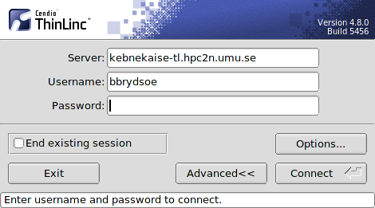

Introduction to HPC2N
Objectives
Get a quick overview of HPC2N.
Overview of projects, storage, and accounts.
Learn how to connect to HPC2N’s systems and how to transfer files.
Learn about editors at HPC2N.
Learn about the file system at HPC2N.
Get a brief introduction to the batch system and its policies.
Overview of HPC2N
High Performance Computing Center North (HPC2N) is a national center for Scientific and Parallel Computing. It is a part of the National Infrastructure for Supercomputing Computing in Sweden (NAISS).
HPC2N is a collaboration between universities and research institutes (Luleå University of Technology, Mid Sweden University, Swedish Institute of Space Physics, the Swedish University of Agricultural Sciences, and Umeå University).
- HPC2N provides
computing resources
user support (primary, advanced, dedicated)
user training and education
The primary user support is mainly handled by the system operators, while the advanced support and training is handled by the application experts (AEs)
HPC2N management and personnel
- Management
Paolo Bientinesi, director
Björn Torkelsson, deputy director
Lena Hellman, administrator
- Application experts (AE)
Jerry Eriksson
Pedro Ojeda-May
- System and support
Birgitte Brydsö (also AE)
Niklas Edmundsson
Roger Oscarsson
Åke Sandgren (also AE)
Matthias Wadenstein
In addition, there are several more people associated with HPC2N. See the list on HPC2N’s webpages.
HPC2N’s systems - Kebnekaise
HPC2N’s supercomputer is called Kebnekaise. It is named after a massif which contains some of Sweden’s largest mountain peaks.
Delivered by Lenovo. Opened for usage November 2016.
Extended during 2018 with Skylake nodes and NVidia V100 GPU nodes.
Kebnekaise compute nodes
CPU |
Memory/core |
Nr. nodes |
Type |
|---|---|---|---|
2 x 14 core Intel skylake |
6785 MB |
52 |
skylake (intel_cpu) |
2 x 64 core AMD zen3 |
8020 MB |
1 |
zen3 (amd_cpu) |
2 x 128 core AMD zen4. |
2516 MB |
8 |
zen4 (amd_cpu) |
Kebnekaise GPU nodes
Type |
# |
Description |
|---|---|---|
2xGPU V100 |
10 |
Intel Xeon Gold 6132, 2 x 14 cores,
2 x NVidia V100, 2 x 5120 CUDA cores, 2 x 640 Tensorcores
|
- In total, Kebnekaise has
602 nodes in 15 racks
19288 cores (2448 of which are KNL-cores)
More than 136 TB memory
984 TFlops/s Peak performance
791 TFlops/s HPL (80% of Peak performance)
Storage
Home directory (25GB)
Project storage (small, medium, large. Applied for through SUPR. Shared among project members)
Overview of projects, storage, and accounts
In order to use Kebnekaise, you must be a member of a compute project. This is handled through SUPR which is why you also need an account there.
There are three sizes of compute projects
Small
<= 5000 core-h/month
at least PhD student to apply
evaluated weekly
Medium
5000 - 200000 core-h/month
at least assistant professor to apply
monthly rounds
Large
more than 200000 core-h/month
bi-annual rounds
Note that you can still be a member of a project even if you are not in Swedish academia. The requirements are only for the PI.
Since the only available storage per default is the 25 GB in a user’s home directory, most also needs to apply for storage. During the application for a compute project the applicant will be asked if they want the default extra storage of 500 GB. If this is not enough, it is necessary to apply for a storage project as well.
There are three sizes of storage project
Small
<= 3 TB
at least PhD student to apply
evaluated weekly
Medium
3 - 30 TB
at least an assistant professor to apply
monthly rounds
Large
more than 30 TB
bi-annual rounds
Project storage is shared among the project members.
The compute project and the storage project can be linked together so members of the compute project automatically becomes members of the storage project.
HPC2N has a webpage with more information about projects.
Accounts
When your project has been approved (or you have become a member of an approved project), you can apply for an account at HPC2N. This is done through SUPR, from the account request page.
NOTE that if you have not signed the NAISS User Agreement we will not get the account request, so remember to do this!
You can find more information about creating accounts here.
Connecting to HPC2N’s systems and transferring files
In order to login to HPC2N, you need an SSH client and potentially an X11 server if you want to open graphical displays.
If you are using Windows and do not currently have a preferred setup for connecting, we recommend using ThinLinc since that includes everything needed and is quick to install.
- Guides
ThinLinc (all OS): https://docs.hpc2n.umu.se/tutorials/connections/#thinlinc
Various SSH clients and X11 servers:
Password
You get your first, temporary HPC2N password from this page: https://docs.hpc2n.umu.se/documentation/access/#first__time__login__password__change
The above page can also be used to reset your HPC2N password if you have forgotten it.
Note that you are authenticating through SUPR, using that service’s login credentials!
Logging in to Kebnekaise
Remember, the username and password for HPC2N are separate from your SUPR credentials.
Linux or macOS
$ ssh <your-hpc2n-username>@kebnekaise.hpc2n.umu.se
Linux or macOS, using X11 forwarding
$ ssh -Y <your-hpc2n-username>@kebnekaise.hpc2n.umu.se
ThinLinc

Start the ThinLinc client
Enter the name of the server: kebnekaise-tl.hpc2n.umu.se and then enter your own username at HPC2N under “Username”:
{kind=link}
- There are a few settings which should be changed
Go to “Options” -> “Security” and check that authentication method is set to password.
Go to “Options” -> “Screen” and uncheck “Full screen mode”.
Enter your HPC2N password here instead of waiting for it to prompt you as that will fail
You can now click “Connect”. You should just click “Continue” when you are being told that the server’s host key is not in the registry.
After a short time, the thinlinc desktop opens, running Mate. It is fairly similar to the Gnome desktop. All your files on HPC2N should now be available.
Exercise
Login to HPC2N using ThinLinc or your SSH client of choice.
File transfers
You will often need to tranfer files between different systems, for instance between HPC2N and your own computer. There are several clients for this.
Note that HPC2N does not allow regular, unsecure ftp!
- Linux
SCP or SFTP
Using SCP. Remote (HPC2N) to local
$ scp sourcefilename <your-hpc2n-username>@kebnekaise.hpc2n.umu.se:somedir/destfilename
Using SCP. Local to remote (HPC2N)
$ scp <your-hpc2n-username@kebnekaise.hpc2n.umu.se:somedir/sourcefilename destfilename
- Windows
Download and install client: WinSCP, FileZilla (only ftp), PSCP(PSFTP, …
Transfer using SFTP or SCP
- macOS
Transfer as for Linux, using Terminal
Download client: Cyberduck, Fetch, …
More information in the connection guides (see section under connecting to HPC2N) and on the HPC2N file transfer documentation: https://www.hpc2n.umu.se/documentation/filesystems/filetransfer
Editors at HPC2N
- HPC2N has various editors installed
vi/vim
nano
emacs
…
Of these, nano is probably the easiest to use if you do not have previous experience with vim or emacs.
- Example, nano
nano <filename>
Save and exit nano: Ctrl-x
Where <filename> is either an existing file or one that you are just creating.
- Example, Emacs (in terminal)
Start with: emacs
Open (or create) file: Ctrl-x Ctrl-f
Save: Ctrl-x Ctrl-s
Exit Emacs: Ctrl-x Ctrl-c
NOTE: if you want to run Emacs with full functionality in a separate window, you need to login with X11 forwarding (ssh -Y or using ThinLinc).
Opening a terminal window in ThinLinc
To start a terminal window, go to the menu at the top. Click “Applications” → “System Tools” → “MATE Terminal”.
Exercise
Try opening and editing a file using nano. Remember that you can create and open a new file directly as well. You will need to open a terminal window first if you are using ThinLinc.
The file system at HPC2N
When you have logged in to HPC2N, you will be in your homedirectory ($HOME). This is accessible to the batch system, but while you can run jobs from here it is only 25 GB.
The project storage is likely where you want to keep most of your data and where you will run your jobs from. The size of it depends on what type of storage project your group has. Remember that it is shared between the project group members. It is usually a good idea for each project member to create a separate subdirectory for their files.
Other than these two places you can also use /scratch on both the login node and the compute nodes. NOTE however that anything you put there on the login node can disappear fairly quickly. For the compute nodes /scratch will be cleaned after the job has finished running so if you use that you will need to copy the files elsewhere before your job ends.
Project storage |
$HOME |
/scratch |
|
|---|---|---|---|
Recommended for batch
jobs
|
Yes |
No |
Yes |
Backed up |
No |
Yes |
No |
Accessible by the batch
system
|
Yes |
Yes |
Yes (node only) |
Performance |
High |
High |
Medium |
Default readability |
Group only |
Owner |
Owner |
Permissions management |
chmod, chgrp, ACL |
chmod, chgrp, ACL |
N/A for batch jobs |
Notes |
Storage your group
get allocated through
the storage projects
|
Your home- directory |
Per node |
There is more information about the filesystems at HPC2N here: https://www.hpc2n.umu.se/filesystems/overview
Project storage for this course
The project for this course is hpc2n202w-xyz. You need to substitute the letter by the actual numerical values. It has default storage of 500 GB, and that is located in the default location:
/proj/nobackup/hpc2n202w-xyz/
Unless you ask for a different name for the directory when you apply for it you will get it named after the project’s ID.
It is always recommended that users create their own subdirectory in the project storage.
Exercise
Open a terminal window and change directory to the course storage project’s location. Create a personal subdirectory there.
The end of the section Editors at HPC2N describes how to open a terminal window when using ThinLinc.
Introduction to the batch system
- HPC2N uses SLURM (Simple Linux Utility for Resource Management) for our batch system. It is an Open Source job scheduler which provides three key functions:
Keeps track of the available system resources
Enforces local system resource usage and scheduling policies
Manages a job queue, distributing work across the resources according to the policies
Large/long/parallel jobs must be run through the batch system.
In order to run a batch job, you either need to give commands to it on the command line, or preferrably create and submit a SLURM batch submit file/job script.
Examples of using the batch system will be given in the “Using Kebnekaise” lecture.
There are guides and documentation for the batch system and the policies to be found on HPC2N’s website: https://www.hpc2n.umu.se/support